Astral · Brand Logo Collection v2
三套独立设计方向。每套固定输出 3 色 × 纯 icon / 带文字 lockup × 透明 / 圆角底色，共 12 个 SVG。此页同时用于检查透明白标、对比度与小尺寸可读性。
white#ffffff
black#000000
primary#161b1d
secondary tile#f1f3f3
01Constellation · 星群
节点星群与四向星芒，精确、开放、具有天体导航感。
透明底 · checkerboard（白标）
transparent · white · icontransparent · white · lockuptransparent · black · icontransparent · black · lockup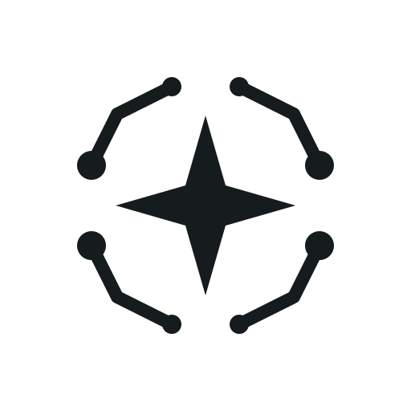
transparent · primary · icontransparent · primary · lockup带底色 · rounded tile
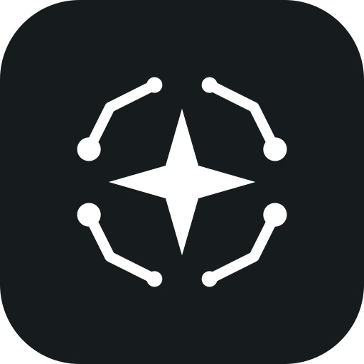
tile · white · icon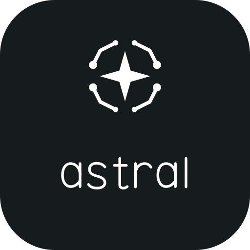
tile · white · lockup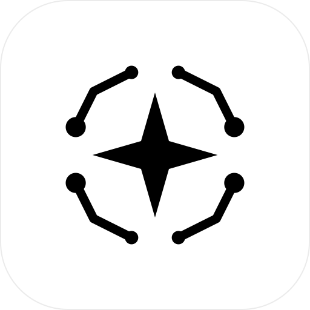
tile · black · icon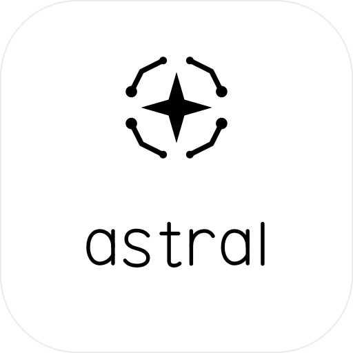
tile · black · lockup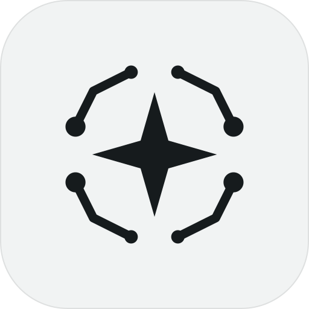
tile · primary · icon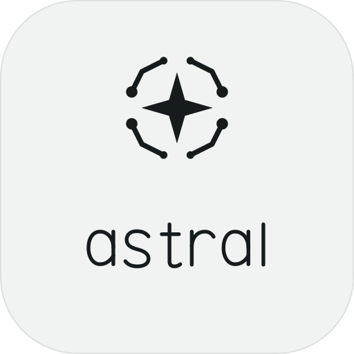
tile · primary · lockup小尺寸 · 24 / 48 / 96 px
white · 24pxwhite · 48pxwhite · 96pxblack · 24pxblack · 48pxblack · 96pxprimary · 24pxprimary · 48pxprimary · 96px
02Prism · 折面
由四个平面组成的几何 A，厚重、锐利，适合产品图标。
透明底 · checkerboard（白标）
transparent · white · icontransparent · white · lockuptransparent · black · icontransparent · black · lockup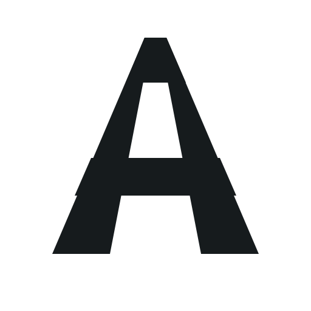
transparent · primary · icontransparent · primary · lockup
带底色 · rounded tile
tile · white · icon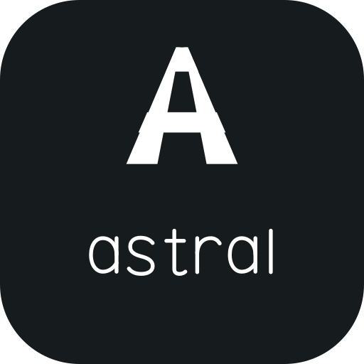
tile · white · lockuptile · black · icon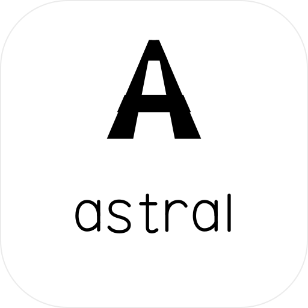
tile · black · lockup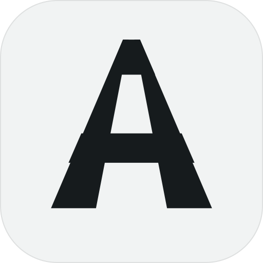
tile · primary · icon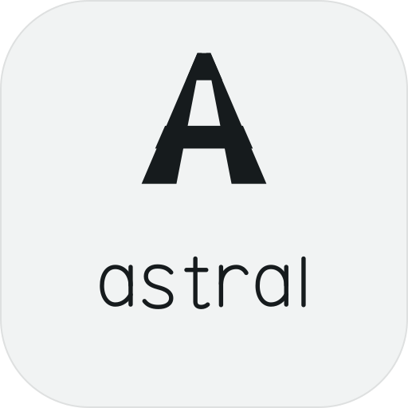
tile · primary · lockup
小尺寸 · 24 / 48 / 96 px
white · 24pxwhite · 48pxwhite · 96pxblack · 24pxblack · 48pxblack · 96pxprimary · 24pxprimary · 48pxprimary · 96px
03Modwave · 调制波
平滑 Bézier 调制波穿过解构 A，最直接回应 Modulator 与草图。
透明底 · checkerboard（白标）
transparent · white · icontransparent · white · lockuptransparent · black · icontransparent · black · lockup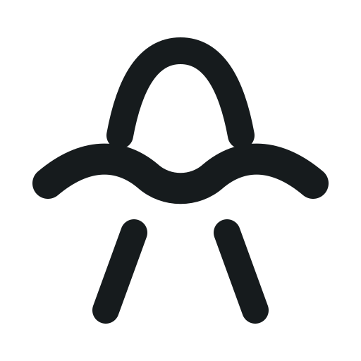
transparent · primary · icontransparent · primary · lockup带底色 · rounded tile
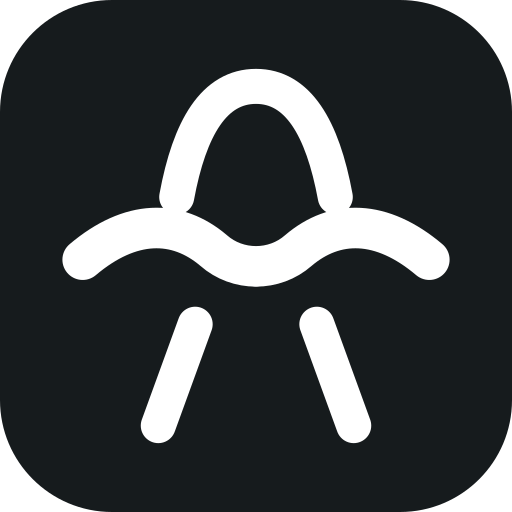
tile · white · icon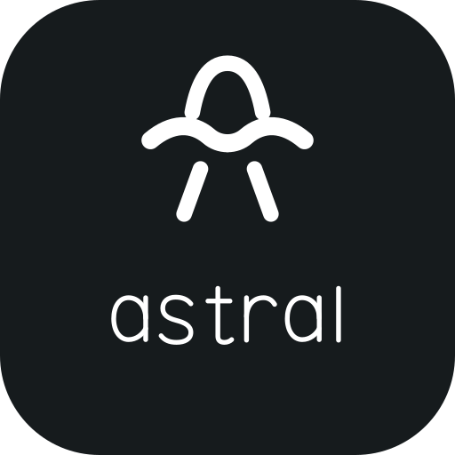
tile · white · lockup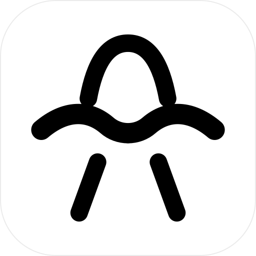
tile · black · icon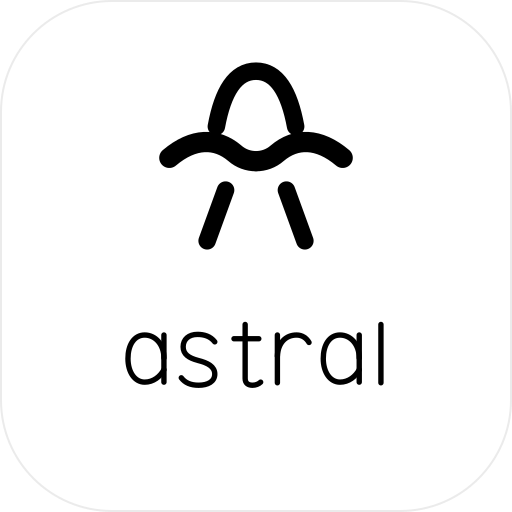
tile · black · lockup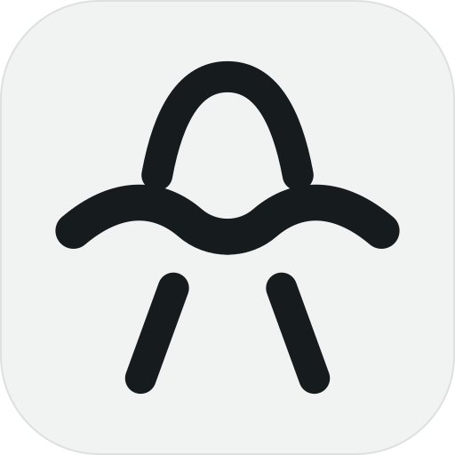
tile · primary · icon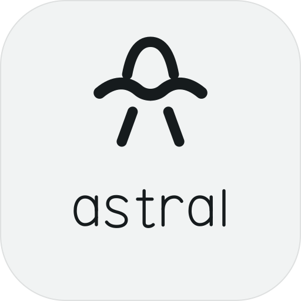
tile · primary · lockup小尺寸 · 24 / 48 / 96 px
white · 24pxwhite · 48pxwhite · 96pxblack · 24pxblack · 48pxblack · 96pxprimary · 24pxprimary · 48pxprimary · 96px